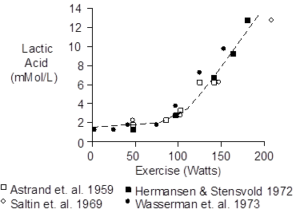
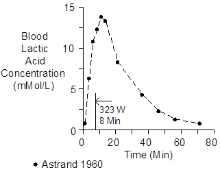
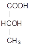

Working muscle metabolizes large amounts of glucose to pyruvate. Pyruvate concentrations rise in the process of pushing the Krebs (citric acid) cycle toward more oxidative metabolism. Some of the pyruvate shuttles to lactate and spills out into the interstitium as lactic acid. Thus, blood lactic acid in aerobic exercise is proportional to the intensity of the exercise.

Exercise at or above the maximum oxygen uptake has a strong anaerobic component. This produces a surge of lactate that is subsequently metabolized with a time constant of 22 minutes. This response is shown below.


Favored units for plasma concentration of lactic acid are mG/100 mL (or mG %) and mMol/L. To convert mG % to mMol/L, multiply by 0.11.
Åstrand, I., P.-O. Åstrand and K. Rodahl. Maximum heart rate during work in older men. J. Appl. Physiol. 14:562-566, 1959.
Åstrand, I. Aerobic work capacity in men and women with special reference to age. Acta Physiol. Scand. 49(Suppl. 169):1-92, 1960.
Hermansen, L. and I. Stensvold. Production and removal of lactate during exercise in man. Acta Physiol. Scand. 86:191-201, 1972.
Saltin, B., L.H. Hartley, Å. Kilbom and I. Åstrand. Physical training in sedentary middle-aged and older men. II. Oxygen uptake, heart rate, and blood lactate concentration at submaximal and maximal exercise. Scand. J. Clin. Lab. Invest. 24:323-334, 1969.
Wasserman, K., B.J. Whipp, S.N. Koyal and W.L. Beaver. Anaerobic threshold and respiratory gas exchange during exercise. J. Appl. Physiol. 35:236-243, 1973.